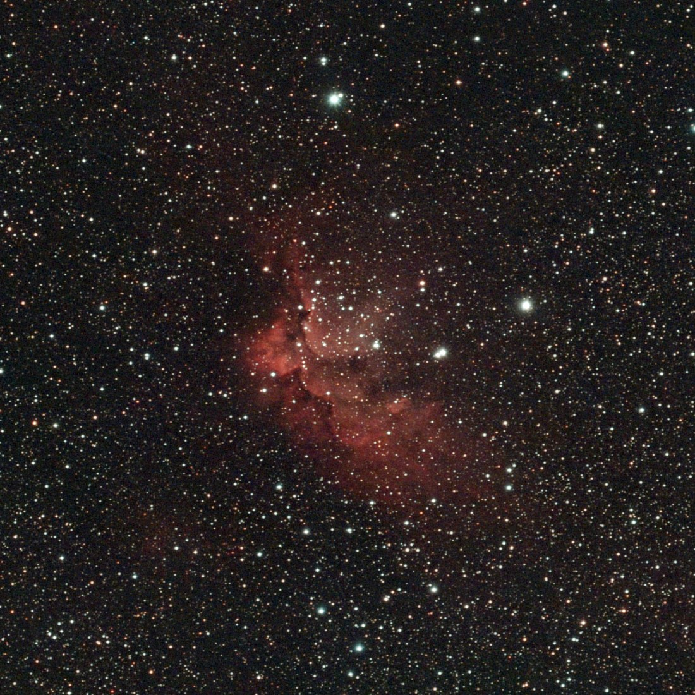
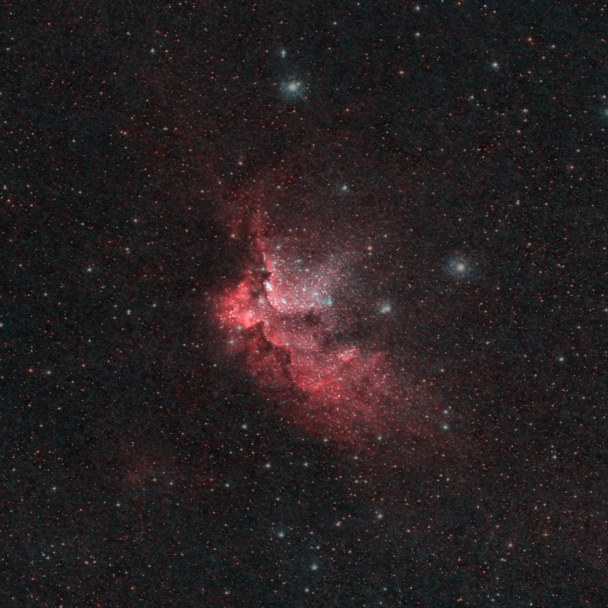
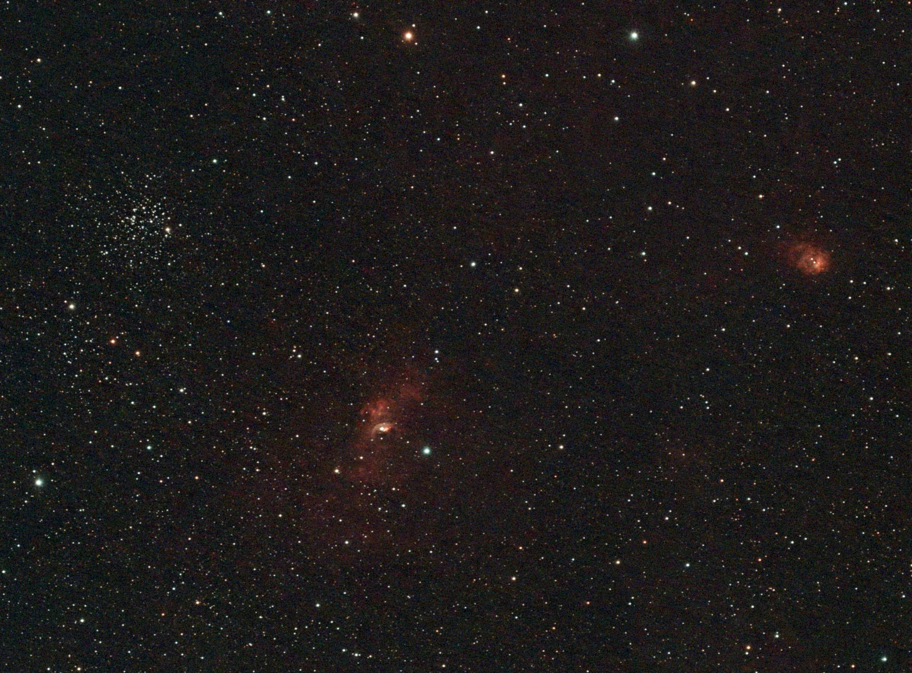

Night log · Friday 30 October 2026
The Wizard again, and a first look at the Bubble
The plan
The forecast models disagreed. The Met Office and ECMWF both had clear sky until about one in the morning; the German ICON model had cloud all evening. The sky was clear at eight, so the scope went out on the wedge.
The Moon was about 70% lit, so this was another night for the dual-band filter, which only lets through the red of glowing hydrogen and the teal of oxygen. Two targets, both high in the north all evening:
- The Wizard Nebula (NGC 7380) again, to add to the 80 minutes from 27 October. More time on the same target means a smoother picture.
- The Bubble Nebula (NGC 7635) in Cassiopeia, a new target, from 22:50.
- Captured
- 20:54–23:15
- Settings
- 20 s · gain 200 · dual-band
- Moon
- About 70% lit
- Mount
- TH10 wedge, EQ
The night
The app's polar alignment read 0.1° again, and this time the stars agreed: in the first frames they crept less than a second of arc a minute in declination.
Centring was the problem. The software normally makes fine corrections with short guide pulses, but the mount's response to them was all over the place: a one-second nudge east moved it 261 arcseconds one way, a longer one less than that. So every correction had to be a full slew, and those only land within 3 to 6 arcminutes. The runner was set to centre within 3 and to re-centre at 5, so it kept trying, every ten minutes, to do something the mount can't. At 21:40 Claude stopped the run, loosened the limits to 6 and 10 arcminutes, and restarted it. After that it only re-centred when it needed to.
A thin patch of haze came over around 22:00 and softened the stars for a while, then cleared. The Wizard finished at 22:50 and the Bubble started. Real cloud arrived at 23:15, the run paused itself, and at half past midnight it took its darks and parked so the scope could come in before the fog.
- Wizard
- 264 × 20 s · 1 h 28 min
- Bubble
- 55 × 20 s · 18 min
- Lost to cloud
- Everything after 23:15
The Wizard Nebula, two nights stacked
The frames from both nights were lined up on the stars and stacked together, each night calibrated with its own darks. That makes 503 frames, 2 hours 48 minutes, a little over twice the first night. The extra time shows in the faint parts: the background is smoother, the dark dust lanes along the ridge are sharper, and the red glow trailing down to the right of the ridge reaches further out.


The Bubble Nebula (NGC 7635)
Eighteen minutes isn't much, but the Bubble sits in a busy patch of sky, and the wide view shows three things at once:
- The Bubble itself, in the middle. A very hot, massive star is blowing a shell of gas outwards, and the small bright arc is the edge of that shell, about 7 light years across.
- M52, the open star cluster on the left: a few hundred stars born together.
- NGC 7538, the round red glow on the right, a cloud where new stars are forming now.

The Bubble is small in a Seestar's field and needs far more time than this to show its shell properly. It's on the list for the next clear night.
Next
The re-centring needs one more fix: at 22:44 it reported itself centred and was 19 arcminutes off two minutes later, which looks like it solved a frame taken while the mount was still settling. After that, more hours on the Bubble, and the Flying Bat (Sh2-129).